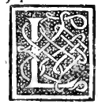

CHAPTER XIV¶
On the Epistyle—Called the Architrave by the Moderns—and Why Excessive Intercolumniations Crack Stone Architraves (Vitruvius Book III).

Once the columns have been erected plumb (a livello) upon their stylobates, with their bases and capitals firmly bedded with iron dowels and molten lead (con loro ferri ben saldi e ben piombati), there is laid across their capitals the epistyle (epistilio in Vitruvius, called the architrave by our modern masons) to bind and chain all the columns together in a single straight line (per fermezza e incatenatura de tutte le colonne).
Let the total height of the epistyle (proportioned to the height of the columns according to the load and dignity of the building) be represented by the vertical span \(ab\) in Plate 0215 (Epistylium, Zophorus, Corona):
Divide the total height of the epistyle into 7 equal parts:
One-seventh (:math:`frac{1}{7}`) at the top is assigned to the taenia or cymatium of the epistyle (la tenia ouer cimatio delo epistilio, marked \(h\) in Plate 0215), upon which the frieze (zophoro, marked \(V\)) rests.
Divide the remaining six-sevenths (:math:`frac{6}{7}`) below the cymatium into 12 equal sub-parts (so each sub-part is \(\frac{1}{14}\) of the whole epistyle), and distribute them among the three fasciae (tre fasce ouer fastigii) in the 3 : 4 : 5 arithmetic proportion:
Lowest Fascia (*Fascia Infima*, marked :math:`a`): 3 parts (out of 12);
Middle Fascia (*Fascia Media*, marked :math:`c`): 4 parts (out of 12);
Upper Fascia (*Fascia Soprana*, marked :math:`e`): 5 parts (out of 12).
Ornamental Mouldings Between and Above the Three Fasciae:
Between the lowest fascia \(a\) and the middle fascia \(c\) is placed the narrow bead-and-reel or astragal moulding \(b\) (fusaroli, paternostri, fogliami), equal in width to one-third (\(\frac{1}{3}\)) of fascia \(a\);
Between the middle fascia \(c\) and the upper fascia \(e\) is placed the fillet/moulding \(d\) (intaulato);
Above the upper fascia \(e\) is placed the echinus or ovolo (echino, called huovolo by our masons, marked \(f\)), equal in height to the lowest fascia \(a\);
And between the echinus \(f\) and the top taenia \(h\) is placed the scotia or cavetto (scotica, called gola delo epistilio by our masons, marked \(g\)), equal to \(d\) (and \(f + g\) together equal half of \(e\)).
This entire assembly of fasciae, astragals (fusaroli), fillet (intaulato), echinus (uovolo), scotia (gola), and taenia (\(a, b, c, d, e, f, g, h\)) is what the Ancients call the Epistyle and our modern craftsmen call the Architrave.
Verbatim Authority of Vitruvius (Book III, Chapter 3) on Fracture of Stone Architraves and Tuscan Wooden Beams
Speaking of the temples of Apollo and Diana in his third book (III.3.4–8), Vitruvius warns that when the intercolumniation is made as wide as three column thicknesses (diastyle), stone epistyles crack and break over the wide span:
Cum trium columnarum crassitudinem intercolumnio interponere possumus, tamquam est Apollinis et Dianae aedes, haec dispositio hanc habet difficultatem, quod epistylia propter intervallorum magnitudinem franguntur… Namque facienda sunt in intervallis spatia duarum columnarum et quartae partis columnae crassitudinis; medium quoque intercolumnium unum, quod erit in fronte, alterum quod in postico, trium columnarum crassitudine: sic enim habebit et figurationis aspectum venustum et aditus usum sine impeditionibus.
(“When we place an interval of three column thicknesses in the intercolumniation, as in the temples of Apollo and Diana, this arrangement has the defect that the epistyles break on account of thegreatness of the spans… Therefore the side intervals should be made of two and one-quarter column thicknesses (\(2\frac{1}{4}\,D\), eustyle), while the single central intercolumniation—one in the front portico and one in the rear—may be given three column thicknesses, so that the building will have both a graceful appearance and an unobstructed entrance.”)
And where wider spans are used (araeostyle), Vitruvius notes that the Ancients built Tuscanico more (“in the Tuscan manner”), fashioning their architraves not of brittle marble or stone, but of strong timber beams sheathed in gilded bronze/copper (rame inviluppato torno a vna forte trave de legno e quello indoravano), which bore the load firmly without cracking!